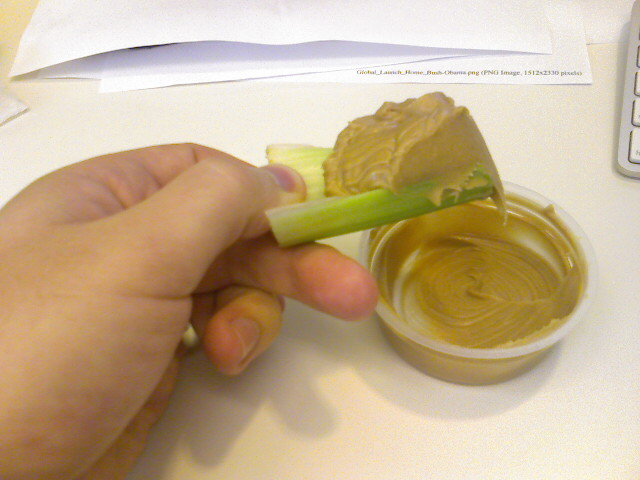

This Could Be A Bad Idea

I clearly suck at rationg celery to peanut butter. UPDATE: I was wrong, that was actually a good idea.

I clearly suck at rationg celery to peanut butter. UPDATE: I was wrong, that was actually a good idea.
The pigs head is all that’s left from the feast at this Guamanian party that Kristina and I have been at all day. We’re watching traditional Haiwaiian performances as this event winds down.

Hanging out in a field with some friends waiting for the fireworks to start. Matt B was just out of frame so mad props to him. Ideal July 4th.
We made it to Bethany Beach today and Kristina is already soaking up the sun. We saw dolphins which were poking up really close to the shore. Worst part of the day was the meter fare: 1 quarter = 10 minutes.
Kristina and I took an early morning bike ride on the boardwalk here in Ocean City, Maryland. The weather is overcast, hazy, and humid so we worked up a sweat but it was still fun, fun, fun.
Every Friday my co-workers and I go to Chipotle for lunch. Today the guy who asked for my order was particularly chatty so I mentioned it was my birthday after being prodded by my co-worker. He said he would take care of me and ended up giving me two extra helpings of steak in my burrito. On top of that my meal was on the house as was hers. Needless to say, finishing this swollen sack of rice, meat and cheese was a little bit more challenging than most Chipotle outtings but I managed to cram it all down while only making a slight mess. Morale of the story: Don’t eat breakfast and go eat lunch at Chipotle while mentioning it’s your special day. If the guy serving you is nice it just might be free and filled to the brim with goodness.
Kristina managed to bake these cookie monster cupcakes and homemade Hershey kisses for my coworkers and I without me even knowing. She even drove me in to work this morning so she could secretly hand off the goods. I even got a fake meeting request, which I fell for, luring me in for the surprise. After a hectic week prepping for the launch of Best Graduate Schools, this was a welcomed surprise.
P.S. My birthday is really tomorrow, the 24th, for those keeping track.
Today is the launch day of America’s Best Graduate Schools. I decided to wear my mortar board while I work on it this week until it launches. The cap has been a big hit at meetings and around the office. This is probably the smoothest rankings project I have ever worked on here at U.S News & World Report. Be sure to check out http://www.usnews.com/grad later on this evening to see the new grad school rankings that I’ve been busy with.
Some officemates and I decided to enjoy our burritos outside due to the nice weather. This duck waddled up to us without hesitation so one of my co-workers gave it her leftover burrito bits. Note the guacamole all over its beak.